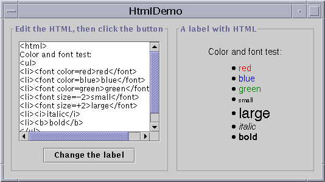

Feedback Form
|
|
Start of Tutorial > Start of Trail > Start of Lesson |
Search
Feedback Form |
With theJLabelclass, you can display unselectable text and images. If you need to create a component that displays a string or an image (or both), optionally reacting to user input, you can do so by using or extending
JLabel. If the interactive component has state, then you should probably use a button instead of a label.Here's a picture of an application that displays three labels. The window is divided into three rows of equal height; the label in each row is as wide as possible.
Try this:
- Compile and run the application. The source code is in
LabelDemo.java, and the image is
middle.gif.
See Getting Started with Swing if you need help compiling or running this application.- Resize the window so you can see how the labels' contents are placed with the labels' drawing area.
All the label contents have the default vertical alignment -- the label contents are centered vertically in the label's drawing area. The top label, which contains both image and text, is specified to have horizontal center alignment. The second label, which contains just text, has the left alignment that is the default for text-only labels. The third label, which contains just an image, has horizontal center alignment, which is the default for image-only labels.Below is the code from
LabelDemo.javaNote that label alignment is different from X and Y alignment. X and Y alignment are used by layout managers and can affect the way any component -- not just a label -- is sized or positioned. Label alignment, on the other hand, has no effect on a label's size or position. It simply determines where, inside the label's painting area, the label's contents are positioned. In the usual case, the label's painting area is exactly the size needed to paint the label, and thus label alignment is irrelevant. For more information about X and Y alignment, see How to Use BoxLayoutImageIcon icon = new ImageIcon("images/middle.gif"); . . . label1 = new JLabel("Image and Text", icon, JLabel.CENTER); //Set the position of the text, relative to the icon: label1.setVerticalTextPosition(JLabel.BOTTOM); label1.setHorizontalTextPosition(JLabel.CENTER); label2 = new JLabel("Text-Only Label"); label3 = new JLabel(icon); //Add labels to the JPanel. add(label1); add(label2); add(label3);.
Often, a label describes another component. When this is true, you can improve your program's accessibility by using the
setLabelFormethod to identify the component the label describes. For example:The preceding code, taken from theamountLabel.setLabelFor(amountField);TextFieldDemoexample discussed in How to Use Text Fields, lets assistive technologies know that the label (amountLabel) provides information about the text field (amountField). For more information about assistive technologies, see How to Support Assistive Technologies
Have you ever wanted to put multiple lines on a label? Have you ever wanted to make part of a label bold or italic? Now you can. As of Swing 1.1.1 Beta 1,
Note: The information in this section documents a feature available only in Swing 1.1.1 Beta 1 or compatible releases.JLabelsupports multiple lines, multiple fonts, and a whole lot more because you can specify a label's text using HTML.Here's an application that dynamically sets the text on a label.
 The action listener for the button executes this single line of code:
Try this:
- Compile and run the application. The source code is in
HtmlDemo.java
See Getting Started with Swing if you need help compiling or running this application. Make sure you compile this program and run it using Swing 1.1.1 Beta 1 or a compatible release.- Edit the HTML in the text area at the left and click the Change the label button. The label at the right shows the result.
- Remove
<html>from the text area on the left. The label at the right shows the result.If the string in the text area on the left begins with <html>, then the label parses it as HTML. Otherwise, the label assumes it's straight text.theLabel.setText(htmlTextArea.getText());Because this is an early release of this feature, there are some gotchas to be aware of:
As of Swing 1.1.1 Beta 1, you can use HTML to set the text for labels and buttons. In the near future, many more Swing components -- tool tips, tabbed panes, and menu items, for example -- will support HTML.
- Don't use <br> in your HTML. The label's preferred size won't be computed correctly (it will be computed as if the <br> weren't there). Use a regular paragraph tag (<p>) instead .
- If you specify an invalid HTML tag, an exception is thrown deep in the text package. Fix your HTML and try again.
Warning: There is no programmatic way to test whether a component supports HTML text. Do not specify HTML text unless you are absolutely sure that your program is running in a release that supports HTML text in the desired component.
The following tables list the commonly usedJLabelconstructors and methods. Other methods you're likely to call are defined by theComponentandJComponentclasses. They includesetFont,setForeground,setBorder,setOpaque, andsetBackground. See The JComponent Class for details. The API for using labels falls into three categories:
Setting or Getting the Label's Contents Method or Constructor Purpose JLabel(Icon)
JLabel(Icon, int)
JLabel(String)
JLabel(String, Icon, int)
JLabel(String, int)
JLabel()Create a JLabelinstance, initializing it to have the specified text/image/alignment. Theintargument specifies the horizontal alignment of the label's contents within its drawing area. The horizontal alignment must be one of the following constants defined in theSwingConstantsJLabelimplements):LEFT,CENTER,RIGHT,LEADING, orTRAILING.void setText(String)
String getText()Set or get the text displayed by the label. void setIcon(Icon)
Icon getIcon()Set or get the image displayed by the label. void setDisplayedMnemonic(char)
char getDisplayedMnemonic()Set or get the letter that should look like a keyboard alternative. This is handy when a label describes a component (such as a text field) that has a keyboard alternative but can't display it. void setDisabledIcon(Icon)
Icon getDisabledIcon()Set or get the image displayed by the label when it's disabled. If you don't specify a disabled image, then the look-and-feel creates one by manipulating the default image.
Fine Tuning the Label's Appearance Method Purpose void setHorizontalAlignment(int)
void setVerticalAlignment(int)
int getHorizontalAlignment()
int getVerticalAlignment()Set or get where in the label its contents should be placed. The SwingConstantsLEFT(the default for text-only labels),CENTER(the default for image-only labels),RIGHT,LEADING, andTRAILING. For vertical alignment:TOP,CENTER(the default), andBOTTOM.void setHorizontalTextPosition(int)
void setVerticalTextPosition(int)
int getHorizontalTextPosition()
int getVerticalTextPosition()Set or get where the button's text should be placed, relative to the button's image. The SwingConstantsLEFT,CENTER, andRIGHT(the default). For vertical position:TOP,CENTER(the default), andBOTTOM.void setIconTextGap(int)
int getIconTextGap()Set or get the number of pixels between the label's text and its image.
Supporting Accessibility Method Purpose void setLabelFor(component)
Component getLabelFor()Set or get which component the label describes.
The following table lists some of the many examples that use labels.
Example Where Described Notes LabelDemoThis section Shows how to specify horizontal and vertical alignment, as well as aligning a label's text and image. HtmlDemoThis section Lets you experiment with specifying HTML text for a label. AlignmentDemoFixing Alignment Problems Demonstrates a possible alignment problem when using a label in a vertical box layout. Shows how to solve the problem. DialogDemoHow to Use Dialogs Uses a changeable label to display instructions and provide feedback. SplitPaneDemoHow to Use Split Panes and How to Use Lists. Displays an image using a label inside of a scroll pane. SliderDemo2How to Use Sliders Uses JLabelto provide labels for a slider.TableDialogEditDemoHow to Use Tables Implements a label subclass, ColorRenderer, to display colors in table cells.TextFieldDemoHow to Use Text Fields Has four rows, each containing a label and the text field it describes. TextComponentDemoGeneral Rules for Using Text Components Has an inner class ( CaretListenerLabel) that extendsJLabelto provide a label that listens for events, updating itself based on the events. To run the example, you also needLimitedStyledDocument.javaColorChooserDemoHow to Use Color Choosers Uses an opaque label to display the currently chosen color against a fixed-color background.
|
|
Start of Tutorial > Start of Trail > Start of Lesson |
Search
Feedback Form |

{kind=link}